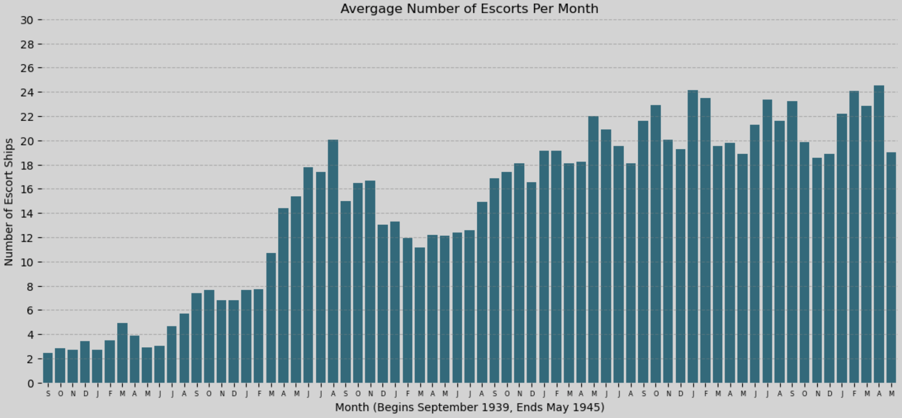
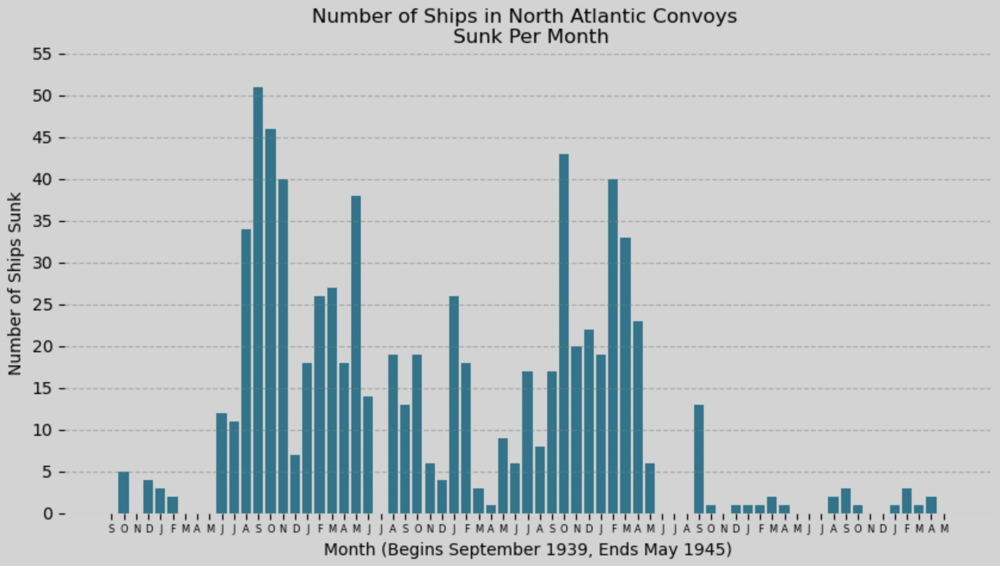
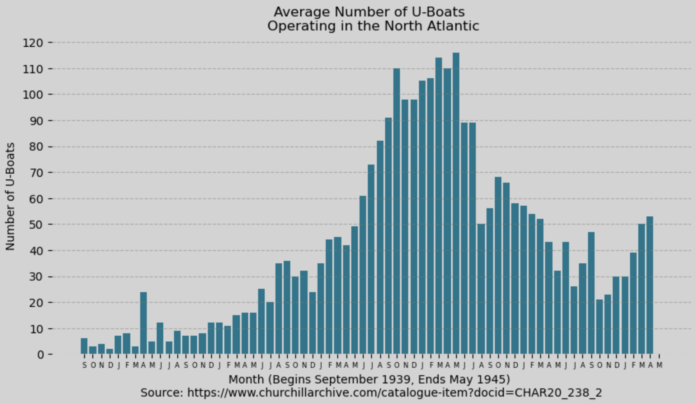
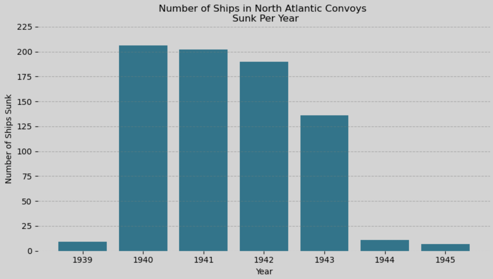
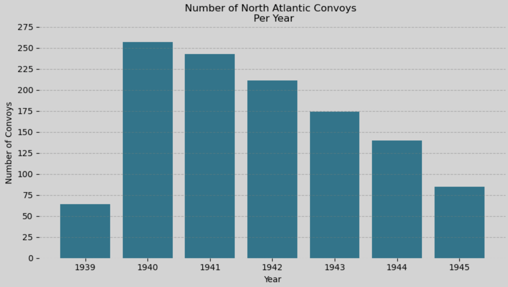
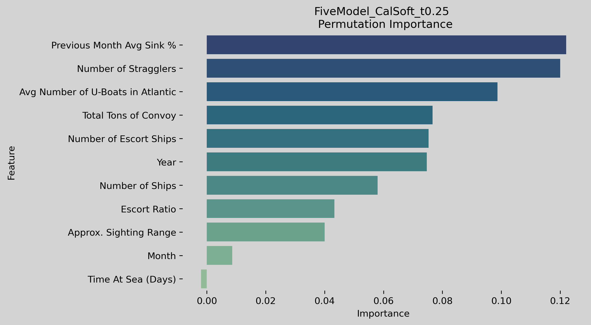

Convoy Data Visualization
The following are visualizations created from the convoy data and machine learning models:
Data Visualizations:
Figure 1:
 Total number of ships from North Atlantic convoy designations HX, SC,
OB, ON, & ONS.
Total number of ships from North Atlantic convoy designations HX, SC,
OB, ON, & ONS.
Figure 2:
 Total tons of North Atlantic convoys and total tons sunk by U-Boats.
Total tons of North Atlantic convoys and total tons sunk by U-Boats.
Figure 3:

Total number of escort ships for North Atlantic convoys by month.
Figure 4:

Number of convoy ships (merchant and escort) sunk by month.
Figure 5:

Estimated number of U-boats operating in the North Atlantic. Data from the Churchill Archive:
Data
Figure 6:

Number of convoy ships (merchant and escort) sunk per year.
Figure 7:

Number of North Atlantic convoys (HX, SC, OB, ON, & ONS) per year.
Machine Learning Visualizations:
Figure 8:
 Final Model Threshold Operating Point Panel.
Final Model Threshold Operating Point Panel.
Figure 9:
 Final Model Precision-Recall Curve.
Final Model Precision-Recall Curve.
Figure 10:
 Final Model All-Metric Threshold Sweep.
Final Model All-Metric Threshold Sweep.
Figure 11:
 Final Model Calibration and Probability Distribution.
Final Model Calibration and Probability Distribution.
Figure 12:

Final Model Feature Permutation Importance.
Figure 13:
 Final Model Feature SHAP Importance.
Final Model Feature SHAP Importance.
Figure 14:
 Final Model False Negative Insight.
Final Model False Negative Insight.